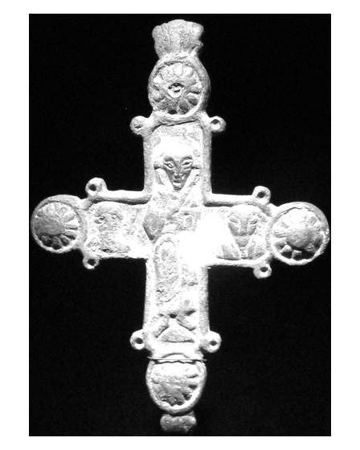

Catalog › CE-0583 · COM2026-183110520
Cruce-relicvar de bronz, Kv. Färgaren, Lund, Kulturen
sec. XI (1001–1100) · Lund (Kv. Färgaren), Suedia · Kulturen, Lund
double-sided reliquary cross (enkolpion), bronz; c. XI (1001–1100); found at Lund (Kv. Färgaren), Suedia; kept at Kulturen, Lund.


Identificare
- Categorie
- Encolpion bivalv (relicvar)
- Material
- Bronz
Datare și atribuire
- Datare
- sec. XI (1001–1100)
Descoperire
- Localitate
- Lund (Kv. Färgaren)
- Țară
- Suedia
- Coordonate
- 55.7029° N, 13.1929° E
- Precizia locului
- Doar localitatea
Păstrare și referințe
- Colecție
- Kulturen, Lund
- Bibliografie
- Fotografie: Francesco Bini (Sailko), Wikimedia Commons, licență CC BY-SA 4.0, https://commons.wikimedia.org/?curid=183110520 (accesat 17.10.2026).
- Figura
- Wikimedia Commons, pagina 183110520
- Observații
- Titlul fișierului: „Crocetta reliquiario encolpion, in bronzo, XI secolo, da kv. färgaren, Lund”. Coordonate: ale localității (aproximative), nu date în sursă.
Citare: Corpus Encolpiorum, CE-0583, Cruce-relicvar de bronz, Kv. Färgaren, Lund, Kulturen, --root/piese/COM2026-183110520/ (accesat 2026-10-20).